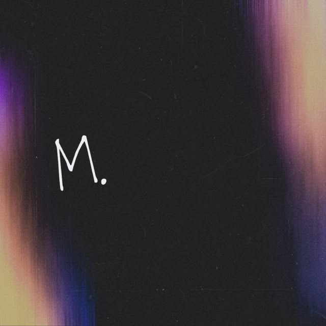
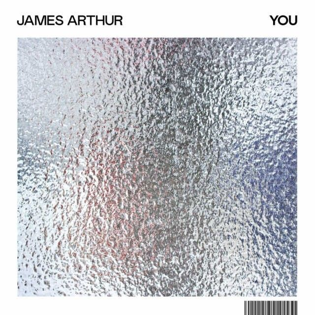
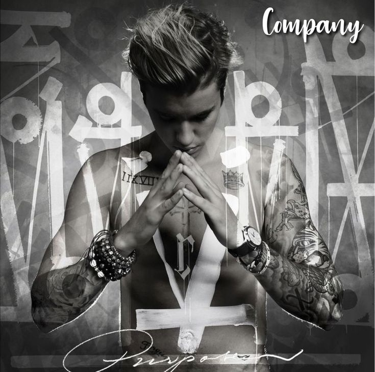
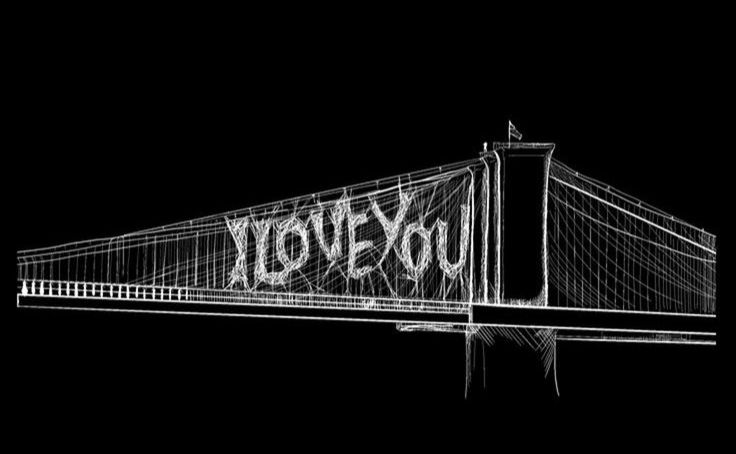

Quero compartilhar momentos em que eu olhe pela janela junto com você, observando o movimento da rua e sentindo cada parte do meu corpo arrepiar de saber que é exatamente ali onde eu queria estar.
Quero tirar fotos de todos os momentos bons da nossa vida: sorrindo, nos beijando, nos abraçando, dormindo juntas, passeando e viajando. Guardar cada um desses instantes em um lugar onde o tempo jamais consiga apagar.
Quero poder te abraçar a qualquer hora do dia e sentir seu corpo quentinho colado no meu. Fazer nossos corações baterem sincronizados num abraço e te amar com a delicadeza e a intensidade do meu corpo junto ao seu.
Quero poder te beijar a qualquer hora do dia, sem motivo, seja no meio de uma risada, de um abraço ou de um gesto de silêncio. Quero colecionar o gosto dos seus lábios em todos os cantos e guardar cada beijo como o melhor detalhe da nossa vida.
Quero andar sempre de mão dada contigo, seja fora de casa ou no aconchego de casa, onde podemos nos ligar no que há de mais simples e seguro, independentemente de onde a vida nos leve.
Quero colecionar o mundo ao teu lado e transformar qualquer saída numa aventura. Seja num passeio sem rumo ou na rotina do dia a dia, o que importa é dividir o mesmo espaço e criar histórias que só a gente entende.
Essas são todas as músicas que eu escuto e lembro de você
I Wanna Be Yours
Arctic Monkeys
Essa música é uma das primeiras que me lembram você. Principalmente essa parte: “If you like your coffee hot, let me be your coffee pot.” Porque eu sei que você ama café. Te dedico essa música toda vez que eu escuto ela; ela é tão especial quanto você é pra mim. Quero que sempre que você escute essa música, se lembre do quanto eu queria ser sua, do quanto eu queria e tentei fazer dar tudo certo. Se lembra de mim com carinho, meu amor. Eu te amo.

M.
The Neighbourhood
Essa música se tornou muito especial pra mim. Toda vez que eu escuto, fico chorando como se você tivesse morrido e eu estivesse lembrando como é difícil ficar longe da pessoa que eu mais amei na minha vida. Essa parte aqui: “al beni yanına sevgilim, seni bana geri ver sevgilim”, que significa: “Me leve com você, querida. Devolva-se a mim, querida.” Eu queria tanto estar com você. Eu sei de todos os nossos problemas, mas eu ainda sim eu queria lutar por você, queria tanto sentir o seu amor me transbordando por dentro. Como eu queria você. Eu não queria ir embora. Como eu queria ter a oportunidade da gente se amar direito, meu ursinho.

Cars Outside
James Arthur
Essa música é uma das mais fofas que eu te dedico toda vez que escuto. Essa parte aqui é como me define agora: “I'm tired of loving from afar, and never being where you are.” Eu tô cansada de te amar de longe, sem poder estar onde você está. Eu queria te abraçar, te beijar, te olhar nos olhos e me declarar de cinco em cinco minutos, e você perceber que eu não sei te amar de forma saudável sem querer largar tudo que eu quero, sem parar de fazer tudo que eu gosto se isso significar que eu vou estar com você, vou ouvir sua voz e sorrir todas as vezes que você sorrir também.
Legendary Lovers
Katy Perry
Essa tem um significado especial, porque sempre que senti saudade me lembrei de você. Você é o meu amor lendário, aquele que não se esquece fácil, aquele que não se perde, não diminui, porém só aumenta, só cresce... “Legendary lovers, we could be legendary.” Eu te amaria em todas as minhas vidas, independente de todos os problemas, meus olhos brilhariam olhando pra qualquer vida que eu te conhecesse.
Lisboa
ANAVITORIA
Essa música é uma das mais românticas que eu já dediquei pra você, eu amo muito essa música. Antes que você diga que já sabe qual é a parte que eu mais gosto, eu vou te desmentir agora: “Te quero tanto, é quase dor. É com você que eu quero estar.” Essa é a minha parte favorita. Eu te amo tanto que chega a doer e, mesmo que a gente não fique junto, quero que você se lembre do tanto que eu amo você e do quanto você significou pra mim.
Lied To
ZAYN
Essa música não tem nem muito o que explicar, ela é fofa kkkkkkk, mas eu dedico ela pra você também. Com muito carinho, ouço ela sempre pensando em você. “This sentiment don't exist without you, You make me feel alive.” Mesmo com todos os nossos problemas, naqueles pequenos momentos em que estamos bem e felizes, eu me sinto viva com você e esse sentimento sempre existe quando eu estou do seu lado. E mesmo se existir um momento em que eu já não tenha mais você, quero que se lembre que eu vou guardar esse sentimento com todo carinho na minha mente.

Company
Justin Bieber
Essa música é para os ficantes, né? Kkkkk. Mas ela me lembra quando a gente se conheceu, então é mais um apego ao momento do que à música em si, mas gosto de como ela me faz lembrar dessa época. Eu já estava super apaixonada no terceiro dia: o seu jeitinho todo maluquinho, sua risada escandalosa, sua gritaria sem fim. Por algum motivo isso me fisgou (sou doida também) e, quando eu não tinha você, meu dia era um pouco sem graça, sentia falta. Eu queria a sua companhia e ser a sua companhia também. Essa música me traz a lembrança de querer estar sempre perto de você.
The Only Exception
Paramore
Essa aí é uma das que mais me pega. Foi na época que você fez aquela surpresa no Mine pra mim. Nessa época eu estava toda perdida e preocupada demais que você estivesse cansada e querendo terminar por conta de todos os seus problemas, então você veio e fez a surpresa e eu chorei do começo ao fim kkkkk. Eu fiquei pensando: “meu Deus, que alívio”. Foi um dia que eu guardo com muito carinho e, na playlist que você fez pra eu escutar enquanto via a surpresa, tinha essa música nela. Eu tenho até hoje ela adicionada na minha playlist, porque ela tem um significado muito bonitinho pra mim e agora você sabe. Enfim, ela só é especial porque foi você que me mostrou.
Agora é 01:10 da manhã, você acabou de ir deitar, e eu to aqui fazendo isso, te pedindo pra escolher as fontes pra eu poder escrever isso aqui pra você. Eu não sei exatamente o que eu posso te dizer, mas é tao bom escutar você sorrir, te ver se divertir, te ver bem do meu lado, eu nao sei como será o dia de amanha, nem o que eu vou precisar inventar pra ver você dar outros sorrisos com algo que eu fale ou faça, mas eu vou tentar te animar!
Os próximos dias serão bem difíceis e complicados eu sei disso, eu nao sei qual vai ser o desfecho de tudo isso, mas estou mais do que feliz em saber que você se divertiu e que esses momentos vao ser guardados por você com muito carinho, tem muitas coisas que eu não entendo o porque de acontecerem com a gente, mas eu nao quero guardar más lembranças da gente caso a gente nao esteja mais uma do lado da outra no futuro, eu quero que você se lembre com um sorrisinho no rosto. <3
ESSA É UMA FOTO EM ATOS REAIS DE LIBIDINAGEM KKKKKKKKKKKKKKKKKKKKK
VOCE ME TRÁS UMA ALEGRIA BOBA DONA JULIA VOCE ME FAZ QUERER QUE O DIA DE AMANHA CHEGUE LOGO PRA EU PODER OUVIR SUA VOZ LOGO!
EU TE AMO JUJU, MUITOOOOOOOO!!!
segunda-feira, 26 de outubro de 2026, 01:00h
Eu comecei a jogar um joguinho no roblox só porque você aparecia la pra ser umas das minhas clientes npc, eu ficava olhando e pensando “meu deus será que ela ta bem? será que ela me esqueceu?” kkkkk isso é tao besta que chega ser engraçado. Eu não consigo parar de te amar, nao consigo te esquecer, eu ja pensei em voltar 200 vezes, mas a gente é tao complicada kkkkk que saco, mas esses sao osm meus pensamentos do dia, do momento, e fazem apenas 3 dias só que paramos de nos falar, mas parece muito mais do que isso, eu estou morrendo de saudade de você, muita.
Eu tenho algo que quero te dizer, pra você poder saber disso por mim: Quando eu quis que você mudasse, nao era a sua personalidade, nao era a sua essência, nem seu jeito. Na verdade isso era oque eu tinha mais pavor, você mudar quem você era e deixar de me amar por isso. O que eu sempre quis de você era que você entendesse que as suas atitudes me machucavam e eu nao queria ter que apontar cada uma delas, porque era isso que realmente machucava...
Mas agora você kk eu amo essa sua essência caótica, eu amei você com todos os seus defeitos, eu fiquei mesmo sabendo que poderia me magoar, mas era você tudo que eu queria e eu quero que você saiba disso, o problema nunca foi VOCE, mas só as suas atitudes, mas você.... Meu Deus, eu sou completamente apaixonada por você, por cada detalhe, todos os detalhes eu amo em você. Nunca foi sobre você, só algumas atitudes e eu queria que você soubesse disso, porque você é lerda e na nossa ultima conversa você falou que estava tentando mudar ate seu dna por mim, e ler isso causou cada coisa em mim, que talvez se você tivesse entendido antes, talvez nao seria tao desgastante pra nenhuma de nos duas. Eu achei que você deveria saber disso, achei que você deveria saber que você é a mulher que eu amo e eram apenas as suas atitudes que eu queria que mudassem, não você, você é a minha garota preferida e eu te amo!
Terça feira, 27 de outubro de 2026, 20:19h
Mais um dia eu jogando esse jogo idiota só porque vou ver esse npc seu.. Eu acho que eu sou egoísta demais quando se trata de você, de verdade eu nao quero que você ache alguém que te ame mais do que eu, que te queira mais do que eu, porque eu queria que você fosse completamente minha. Mas bem la no fundo, bem fundo mesmo kk eu desejo que você possa conhecer um amor ainda mais genuíno, porque só de pensar na sua felicidade, ja me deixa ainda mais feliz, mesmo que seja doloroso.
Aaaah como eu te amo minha pequena, minha piquituxa, como eu te amo... Você pensa em mim todo dia também? Você pensa em me mandar mensagem? Ou você ja esta mais de boa com tudo isso, agora você nao tem mais ninguém cobrando você, nao tem mais ninguém no seu pé, isso deve ser libertador eu acho kkkkkkk acho que se fosse o contrario, eu ficaria melhor sem mim também.
espero de verdade que você esteja sorrindo muito, comendo direito, dormindo melhor, porque eu nao estou fazendo nenhuma dessas coisas kkkkkkkkkkk to morrendo por dentro todo dia, de saudade do meu ursinho. Por favor esteja bem, esteja saudável, esteja feliz.
“A saudade é a prova silenciosa de que o amor continua vivo, mesmo quando a presença se transforma em lembrança. É sentir falta de um abraço, de uma voz, de um sorriso que fazia qualquer dia parecer mais bonito. É encontrar alguém em pequenas coisas, em músicas, lugares e momentos que antes pareciam comuns. O amor verdadeiro não desaparece com a distância, nem se desfaz com o tempo; ele permanece escondido nos detalhes, esperando por uma lembrança para florescer novamente. E, por mais que a ausência doa, existe algo bonito em sentir saudade: significa que alguém fez morada eterna em nosso coração.”
“Eu te queria a vida toda, te confesso...”
sexta-feira, 30 de outubro de 2026, 03:25h
Hoje foi um dois dias que eu mais chorei na minha vida, chora de soluçar mesmo kkkkk porque? porque estou morrendo de saudades suas, porque eu quero você mais do que qualquer coisa no mundo, mas nao posso ter.
Tomar essa decisão de encerrar tudo com você foi mais uma forma de nos deixar livre, do que por eu querer mesmo. Tudo que eu senti eu senti de forma bem intensa, dos menores aos maiores detalhes, é uma coisa louca como o amor deixa a gente meio maluco, ou eu que nao sei amar sem adoecer por causa disso kkkkkkk
Eu queria que as coisas tivessem sido mais fáceis pra nos, queria que a gente conseguisse se entender.. Eu queria que você tivesse entendido e abraçado a minha dor e os meus pedidos como uma forma de socorro, acho que viver do seu lado com pavor de te perder a qualquer momento deixou tudo mais difícil pra mim, mas eu juro que dei o meu melhor pra confiar e ficar do seu lado independente do medo que me aterrorizava todos os dias e mesmo com tudo que me machucava eu jamais quis sair do seu lado. Eu quis fugir de tudo isso, de mínimas coisas que eu via que me faziam reviver tudo de novo de formas ainda piores, mas eu nao consegui, e eu sinto muito por isso, mas todas as brigas era só pra você me enxergar, nao era um ataque, era mais um grito desesperado do tipo “por favor enxerga a minha dor, o meu medo, o meu coração aflito”.
Eu amo você, e por amar tanto você eu nao consegui viver mais um dia do seu lado te vendo infeliz comigo. Tem muito mais no mundo que você queira viver do que um relacionamento como o nosso, mas por mais complicado que ele foi, eu ainda queria ter ele de novo, só pra poder estar perto de você, voltaria pro fundo do poço se isso significasse estar perto de você, mas o amor nao é pra ser doloroso assim, nao é pra ser desgastante assim, acho que você seria minha se você estivesse aqui pertinho de mim agora...
Saindo dessa vibe depressiva, eu imaginei só essa semana umas 40 vezes como seria sair com você, como seria gostoso abraçar você, segurar sua mao e conversar sobre um milhão de coisas, eu olhando pra você toda apaixonada, caramba, como eu queria viver isso com você, meu amor.. Como eu queria.
E mais uma fotinha minha com seu npc pra sentir ainda mais a sua falta, e como eu to sentindo sua falta julia, meu deus que saudade de voce.
Eu te amo com cada batida do meu coração. Lembre disso.
♥♥♥♥♥
Segunda - feira, 2 de novembro de 2026, 13:00h
Hoje é um daqueles dias que eu estou pensando em você, pensando em como nossa vida seria daqui alguns anos, se teria dado certo ou não, se a gente casou e teve 4 filhos kkkkk pensar disso me deixa menos triste. Eu estava pensando, como seria a gente ser mae desse tanto de gente, como seria nossas viagens de família, como seria o tipo de foto de que a gente tiraria sempre em toda viagem.
Penso sobre as nossas manias morando juntas, como seria nossa rotina, como seria acordar todo dia com você do meu lado, como seria ter você me perturbando vez ou outra, como seria poder cozinhar pra você e saber se você aprova ou não a minha comida. Queria combinar pijamas com você, sair combinando, maratona series, filmes abraçadinhas no sofá, eu te atacar de vez em quando porque nao sei resistir você, eu dormir no meio do filme porque ja estou ficando velha.
Queria saber a sensação que é te ver dormindo do meu lado e poder ficar te observando, poder fazer carinho no seu rosto, fico pensando como seria poder simplesmente tocar em você a hora que eu quisesse, abraçar, beijar, te puxar pra perto de mim, te apertar, te morder, te bater kkkkkkk e mais um monte de outras coisas, queria poder sentir tudo isso com você, mas mesmo que isso nunca seja possível, saiba que isso era um dos meus mais carinhosos desejos.
Eu te mimaria tanto que eu acho que você ficaria insuportável (mais do que você ja é kkkkkk) mas eu faria tudo por você, mesmo que isso te estragasse e eu quisesse te matar com o mimo que eu mesma dei, mas valeria a pena se isso te fizesse sorrir pra mim todos os dias, se isso fizesse você querer estar perto de mim, se isso fizesse você feliz eu faria. Eu faria muito mais do que eu posso pela sua felicidade.
Bom, tudo isso são coisas obvias que eu faria, e eu tenho certeza que você sabe que eu faria. Mas acima de tudo eu te amaria como a coisa mais preciosa do mundo e cuidaria de você como se você fosse feita de um vidro super quebrável.

"You're my water when I'm stuck in the desert." Tradução: “Você é minha água quando estou preso no deserto.”
“Best Part” — Daniel Caesar ft. H.E.R.
"Take my hand." Tradução: “Segure minha mão.”
“Can't Help Falling in Love” — Elvis Presley
Segunda - feira, 2 de novembro de 2026, 15:32h
Eu pesquisei varias musicas sobre amor, e quero compartilhar elas com voce
"You're the one I love, You're the only one I see." "Você é a pessoa que eu amo, você é a única que eu vejo."
Ainda não sei como será amar você em todos os detalhes, mas desejo descobrir cada um deles. Quero que, um dia, quando olharmos para trás, possamos perceber que tudo começou com uma vontade: a de fazer do nosso encontro uma história que nenhum de nós queira deixar para trás.
“Abraço”
Quero descobrir como é encontrar abrigo nos seus braços, sentir que, por alguns instantes, o mundo pode esperar. Quero abraços demorados, daqueles sem pressa de terminar, que dizem tudo aquilo que as palavras não conseguem explicar. E espero que, um dia, você também encontre nos meus braços um lugar onde sempre queira voltar.
Poemas que eu te dedicaria.
“Beijo”
Imagino como será o nosso primeiro beijo, aquele instante que talvez eu passe tanto tempo esperando. Quero descobrir o que sentirei quando nossos lábios se tocarem, e como será transformar esse desejo em realidade. Espero que seja apenas o primeiro de tantos outros, de tantos momentos que ainda quero viver com você.
“Segurar as mãos”
Quero encontrar sua mão e entrelaçar meus dedos aos seus, caminhar sem pressa, sem precisar saber a direção. Quero atravessar ruas, conhecer lugares e dividir caminhos, sempre com a sua mão acompanhando a minha. E, mesmo que a vida nos leve por estradas desconhecidas, espero que nunca nos falte vontade de caminhar juntos.
Poemas que eu te dedicaria.
“Olhar nos olhos”
Quero olhar profundamente nos seus olhos e descobrir tudo aquilo que ainda não conheço. Quero encontrar neles carinho, confiança e sinceridade, e perceber que você também encontra tudo isso nos meus. Espero que chegue o dia em que um simples gesto seja suficiente para entendermos o que sentimos, sem precisar encontrar palavras para explicar.
“Batidas do coração”
Quero descobrir como será ter você por perto, sentir meu coração acelerar diante da sua presença. Imagino aquele instante em que o nervosismo toma conta, e eu só conseguir pensar será você. Espero que, com o tempo, nossas batidas encontrem paz, e que a presença um do outro se torne uma das partes mais bonitas dos nossos dias.
Poemas que eu te dedicaria.
“Casa, morar junto e filhos”
Sonho com uma casa que ainda não existe, mas que um dia possa chamar de nossa. Quero escolher os móveis com você, dividir as manhãs, preparar refeições e decorar nossos cantinhos, e uma família construída com carinho. Não sei como será esse futuro, mas sei que gostaria muito de construí-lo ao seu lado.
“Viagens românticas”
Quero conhecer lugares que ainda não conhecemos, descobrir paisagens e colecionar fotografias ao seu lado. Sonho com viagens sem pressa, pôr do sol em cidades desconhecidas e noites em que a única preocupação seja aproveitar o momento. Quero olhar para cada destino e pensar: ainda bem que escolhi viver isso com você.
Poemas que eu te dedicaria.
“Declarações de amor”
Tenho tantas coisas que gostaria de dizer, tantos sentimentos que ainda quero transformar em palavras. Quero um dia olhar nos seus olhos e conseguir explicar o quanto sua presença se tornou importante para mim. Quero demonstrar meu carinho nas pequenas coisas e nunca deixar que você tenha dúvidas sobre o quanto é especial na minha vida.
“Estar ao lado uma da outra”
Quero estar ao seu lado nos dias que ainda virão, acompanhar suas conquistas e celebrar seus sonhos. Quero conhecer suas versões ao longo dos anos, estar presente nas mudanças e crescer junto com você. Não espero que todos os dias sejam perfeitos, mas desejo que exista vontade de continuar. E, quando o futuro finalmente chegar, espero poder olhar para o lado e encontrar você ali.
.jpg)
.jpg)
.jpg)
.jpg)
.jpg)